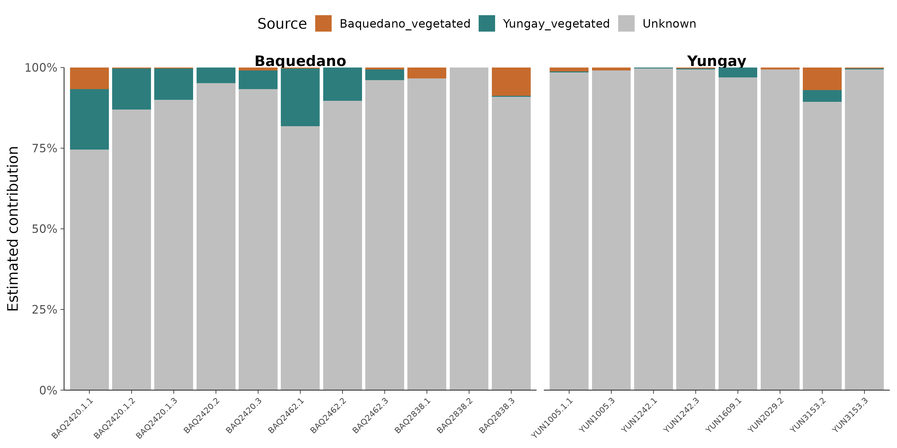

16S 微生物组最佳实践系列（十一）：SourceTracker 溯源分析——它们从哪里来
📋 教程信息 - GitHub：petemeng/16S-Tutorial（完整代码与环境文件） - 数据来源：Atacama soils 双端数据集（54 个样本；35 个 vegetated source，19 个 bare sink） - 预计阅读：35 分钟 | 实操：20 分钟 - 难度：⭐⭐⭐（5 星制） - 前置知识：完成本系列第 3、6 篇，
results/下有table-filtered-export/feature-table.biom和phyloseq_object.rds
本篇目标
前面十篇一直在回答“这里有什么”“谁不同”“谁最重要”。这一篇换个问题：裸地样本里的群落结构，有多少能被相邻 vegetated 土壤解释？
这就是 SourceTracker 的典型用法。
在 Atacama 这套设计里，我们不是做人体部位间迁移，而是做一个更符合生态场景的版本：
- source：带植被样本
- sink：裸地样本
- source category：再按 transect 区分成
Baquedano_vegetated和Yungay_vegetated
读完这一篇，你会：
- 理解 SourceTracker 的“source 混合解释 sink”思路
- 正确组织用于溯源的 metadata
- 运行
sourcetracker2 gibbs - 读懂
Unknown的真正含义 - 知道为什么在荒漠土壤数据里，
Unknown往往比教学示例里更高
SourceTracker 到底在估计什么
SourceTracker 的模型很直观：它假设每个 sink 样本都可以看作若干 source 的混合。
放到这套 Atacama 数据里，相当于在问：
一个 bare soil 样本的群落组成，有多少像 Baquedano 的 vegetated 样本？有多少像 Yungay 的 vegetated 样本？还有多少压根不太像任何已知 source？
最后那一部分，就是 Unknown。
这一列非常重要。它不表示“算法坏了”，而是表示：
- 你定义的 source 不足以解释 sink
- sink 本身可能拥有大量独特群落结构
- 你的 rarefaction/采样深度/训练集代表性可能还不够
在真实环境样本里，Unknown 很高反而很常见。
Step 0：确认环境
服务器上已经单独准备好了 sourcetracker2 conda 环境。先确认命令可用。
conda run -n sourcetracker2 sourcetracker2 --help | head -2
📊 输出：
Usage: sourcetracker2 [OPTIONS] COMMAND [ARGS]...
Options:
Step 1：构建 source / sink 元数据
这里的关键不是 feature table，而是怎么定义 source 和 sink。
# ============================================================
# 文件：analysis/11_sourcetracker.R
# 功能：Atacama vegetated -> bare 溯源分析
# ============================================================
source("/media/desk16/tly9658/16s-atacama-tutorial/analysis/common_16s.R")
suppressPackageStartupMessages({
library(biomformat)
library(ggplot2)
library(readr)
library(dplyr)
library(tidyr)
library(tibble)
library(scales)
})
ensure_dir(file.path(ATACAMA_ROOT, "results", "figures"))
ps <- readRDS(file.path(ATACAMA_ROOT, "results", "phyloseq_object.rds"))
meta <- sample_data(ps) %>%
data.frame(check.names = FALSE) %>%
rownames_to_column("SampleID") %>%
mutate(
SourceSink = ifelse(vegetation == "yes", "source", "sink"),
Env = case_when(
SourceSink == "source" & transect_name == "Baquedano" ~ "Baquedano_vegetated",
SourceSink == "source" & transect_name == "Yungay" ~ "Yungay_vegetated",
transect_name == "Baquedano" ~ "Baquedano_bare",
TRUE ~ "Yungay_bare"
)
)
cat("Source/Sink 分布：\n")
print(table(meta$SourceSink, meta$Env))
mapping_path <- file.path(ATACAMA_ROOT, "results", "sourcetracker_metadata.tsv")
write_tsv(
meta %>% select(SampleID, SourceSink, Env, transect_name, vegetation),
mapping_path
)
📊 输出：
Source/Sink 分布：
Baquedano_bare Baquedano_vegetated Yungay_bare Yungay_vegetated
sink 11 0 8 0
source 0 14 0 21
这个设计的含义很明确：
- Baquedano 裸地有 11 个 sink
- Yungay 裸地有 8 个 sink
- 两条 transect 的 vegetated 样本分别作为 source 参考库
这里不是在估计“某个 bare 样本来自某个单一样本”，而是在估计它更接近哪一类 source 环境。
Step 2：运行 SourceTracker2
输入 feature table 直接用上游已经导出的 BIOM 表。脚本里按照最小测序深度自动选 rarefaction depth，这次实际跑下来是 1000。
conda run -n sourcetracker2 sourcetracker2 gibbs \
-i /media/desk16/tly9658/16s-atacama-tutorial/results/table-filtered-export/feature-table.biom \
-m /media/desk16/tly9658/16s-atacama-tutorial/results/sourcetracker_metadata.tsv \
-o /media/desk16/tly9658/16s-atacama-tutorial/results/sourcetracker_out_v2 \
--jobs 1 \
--source_rarefaction_depth 1000 \
--sink_rarefaction_depth 1000 \
--burnin 100 \
--restarts 10
主输出文件是：
📊 输出：
results/sourcetracker_out_v2/
├── mixing_proportions.txt
├── mixing_proportions_stds.txt
└── ...
mixing_proportions.txt 就是核心结果，表示每个 sink 样本来自各 source 的估计比例。
Step 3：读取结果并做汇总
先把每个 sink 样本的来源比例读进来，再按 transect 求平均。
# ============================================================
# Step 3: 整理结果
# ============================================================
mixing <- read_tsv(
file.path(ATACAMA_ROOT, "results", "sourcetracker_out_v2", "mixing_proportions.txt"),
show_col_types = FALSE
)
sample_col <- colnames(mixing)[1]
mixing <- mixing %>%
rename(SampleID = all_of(sample_col)) %>%
left_join(
meta %>% select(SampleID, transect_name, vegetation, SourceSink),
by = "SampleID"
)
write_tsv(mixing, file.path(ATACAMA_ROOT, "results", "sourcetracker_mixing.tsv"))
cat("平均来源贡献：\n")
mean_contrib <- mixing %>%
filter(SourceSink == "sink") %>%
group_by(transect_name) %>%
summarize(
Baquedano_vegetated = mean(Baquedano_vegetated, na.rm = TRUE),
Yungay_vegetated = mean(Yungay_vegetated, na.rm = TRUE),
Unknown = mean(Unknown, na.rm = TRUE),
.groups = "drop"
)
print(mean_contrib)
📊 输出：
平均来源贡献：
# A tibble: 2 × 4
transect_name Baquedano_vegetated Yungay_vegetated Unknown
<chr> <dbl> <dbl> <dbl>
1 Baquedano 0.0193 0.0760 0.905
2 Yungay 0.0129 0.00985 0.977
这组数一眼就能看出结论：
- 两个 transect 的 bare sink 都以
Unknown为主 - Baquedano bare 还能从 vegetated source 得到少量解释，尤其是
Yungay_vegetated那一列略高 - Yungay bare 几乎完全不被已知 vegetated source 解释，
Unknown接近 98%
这和“裸地就是植被样本的简单延伸”完全不是一回事。
如果直接看 results/sourcetracker_mixing.tsv 的样本级结果，也能看到这种模式：
📊 输出：
SampleID Baquedano_vegetated Yungay_vegetated Unknown transect_name
BAQ2420.1.2 0.0030 0.1273 0.8697 Baquedano
YUN2029.2 0.0061 0.0000 0.9939 Yungay
BAQ2420.1.3 0.0030 0.0970 0.9000 Baquedano
YUN1005.3 0.0091 0.0000 0.9909 Yungay
BAQ2838.1 0.0333 0.0000 0.9667 Baquedano
BAQ2838.3 0.0879 0.0030 0.9091 Baquedano
Step 4：可视化溯源结构
mixing_long <- mixing %>%
filter(SourceSink == "sink") %>%
pivot_longer(
cols = c(Baquedano_vegetated, Yungay_vegetated, Unknown),
names_to = "Source",
values_to = "Contribution"
) %>%
mutate(
Source = factor(Source, levels = c("Baquedano_vegetated", "Yungay_vegetated", "Unknown")),
SampleID = factor(
SampleID,
levels = meta %>%
filter(SourceSink == "sink") %>%
arrange(transect_name, SampleID) %>%
pull(SampleID)
)
)
p_st <- ggplot(mixing_long, aes(x = SampleID, y = Contribution, fill = Source)) +
geom_col(width = 0.92) +
facet_grid(~ transect_name, scales = "free_x", space = "free_x") +
scale_fill_manual(
values = c(
"Baquedano_vegetated" = "#C66B2D",
"Yungay_vegetated" = "#2D7D7D",
"Unknown" = "grey75"
)
) +
scale_y_continuous(labels = percent_format(accuracy = 1), expand = c(0, 0)) +
labs(x = NULL, y = "Estimated contribution", fill = "Source") +
theme_songlab() +
theme(
axis.text.x = element_text(angle = 45, hjust = 1, size = 8),
legend.position = "top"
)
save_plot_dual(p_st, "ch11_sourcetracker_barplot", width = 12, height = 6)

图 1：SourceTracker 堆叠条形图。 每个柱子是一个 bare sink 样本，灰色部分是 Unknown。
这张图最重要的观察不是某一个样本有 8% 还是 12% 的 source 贡献，而是整体模式：
大多数 bare soil 样本都以 Unknown 为主。
这说明：
- bare 样本的群落结构并不能简单看成 vegetated 样本的稀释版
- 裸地可能存在自己独特的生态位和筛选压力
- 现有 source 定义仍然不够覆盖整个环境来源空间
这一章结果该怎么解释
对生态样本来说，这个结果其实挺合理。
如果你原本以为“裸地主要就是周围 vegetated 土壤的衍生物”，那现在的数据更像是在说：
并不是。
至少在这批 Atacama 样本里，裸地群落保留了大量不能被相邻 vegetated source 解释的结构。
比较稳妥的正文写法通常是：
“以 vegetated soils 作为 source、bare soils 作为 sink 运行 SourceTracker2 后，两个 transect 的 bare 样本均以 Unknown 来源为主，其中 Baquedano bare 平均 Unknown 为 0.905，Yungay bare 为 0.977，提示裸地样本包含大量不能由现有 vegetated source 解释的群落组成。”
这类写法不会过度解读，但已经足够有信息量。
一个必须提醒的细节
SourceTracker 本身是 Gibbs 采样模型，所以不同次运行的数值会有轻微波动，尤其在 source/sink 样本量不算很大的时候更明显。
真正该盯住的是：
- 大方向是否稳定
Unknown是否持续占主导- 不同 transect 之间的相对强弱关系是否一致
对这次 Atacama 结果来说，最稳定的信息就是：bare sinks 的主要来源并不在当前定义的 vegetated source 里。
本篇小结
这一篇我们把 Atacama 的 vegetated 样本当作 source、bare 样本当作 sink，跑通了 SourceTracker2。
结论非常明确：
Baquedano bare 平均 Unknown = 0.905，Yungay bare 平均 Unknown = 0.977。
这说明裸地群落中有非常大一部分结构，不能被现有 vegetated source 直接解释。
所以 SourceTracker 在这里的价值，不是证明“谁来自谁”，而是提醒你：现有 source 定义还解释不了这个生态系统的大部分变化。
下一篇预告
前面 11 篇都还是单组学思路。下一篇我们走到一个更接近论文综合结果区的主题：微生物组和代谢组怎么联合分析？
Atacama 官方教程没有配套代谢组，所以我们会基于当前 54 个样本模拟一套与群落结构相关的代谢物数据，演示 Mantel、Procrustes 和 genus-metabolite 相关热图的完整流程。
📌 本篇图和表都来自服务器实际运行结果，可在 GitHub 仓库直接复现。
本系列导航
| 篇目 | 主题 | 状态 |
|---|---|---|
| 第 1 篇 | 只测一个基因，怎么就能知道有哪些细菌 | ✅ 已发布 |
| 第 2 篇 | 搭建环境，拿到数据 | ✅ 已发布 |
| 第 3 篇 | DADA2 去噪——从噪声中找到真实序列 | ✅ 已发布 |
| 第 4 篇 | 物种注释——给每个 ASV 一个名字 | ✅ 已发布 |
| 第 5 篇 | 多样性分析——有多“丰富”，彼此有多“不同” | ✅ 已发布 |
| 第 6 篇 | 物种组成可视化——谁占了多少 | ✅ 已发布 |
| 第 7 篇 | 差异物种分析——谁真的变了 | ✅ 已发布 |
| 第 8 篇 | PICRUSt2 功能预测——它们能做什么 | ✅ 已发布 |
| 第 9 篇 | 共现网络分析——谁和谁总在一起 | ✅ 已发布 |
| 第 10 篇 | 随机森林 biomarker 筛选——谁最能代表这个群落 | ✅ 已发布 |
| 第 11 篇 | SourceTracker 溯源分析——它们从哪里来 | 📍 本篇 |
| 第 12 篇 | 微生物组-代谢组联合分析 | ✅ 已发布 |
| 第 13 篇 | 发表级图表与结果整合 | ✅ 已发布 |